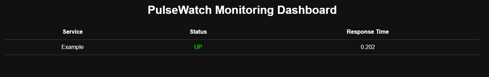
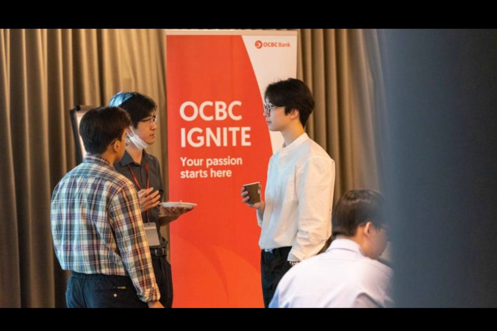
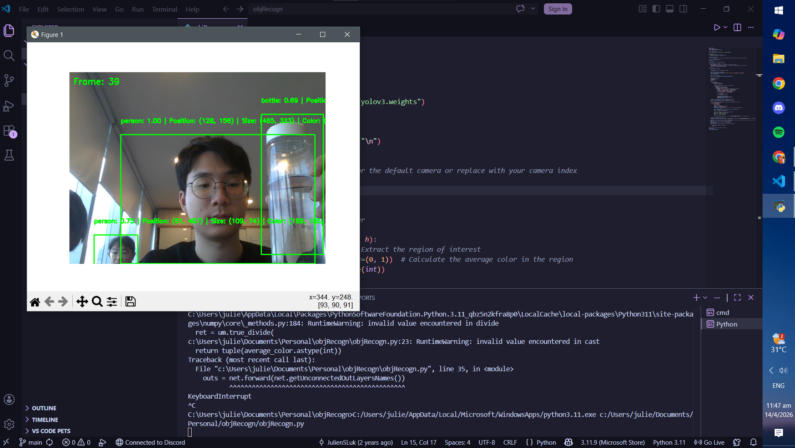

Backend / Monitoring
PulseWatch Monitoring Platform
A FastAPI-based service monitoring platform with automated uptime checks, response-time tracking, background jobs, and a live dashboard.
Automation • Backend • Systems
I build backend systems, monitoring platforms, workflow automation, and practical software that improves reliability and reduces manual work.
OCBC internship
Automation systems built
Processing time reduced

About
I’m an Information Technology graduate from Ngee Ann Polytechnic with experience in automation, monitoring systems, internal tools, bots, dashboards, and backend-focused development.
During my internship at OCBC, I built Python-based automation for service monitoring, reporting, and log maintenance, including systems that reduced manual processing time by around 90%.
My strongest area is automation engineering: connecting tools, reducing repetitive work, and building systems that teams can rely on.
I’m currently focused on backend development, workflow automation, and building software that solves real operational problems.
Projects

Backend / Monitoring
A FastAPI-based service monitoring platform with automated uptime checks, response-time tracking, background jobs, and a live dashboard.

Computer Vision
Python-based computer vision project focused on recognizing objects using image processing and classification logic.
Full Stack / ML
A web platform for coordinating food donations, with machine learning used to predict donation demand and support better allocation.
Automation Systems
Built internal and freelance automation tools including Telegram bots, scheduling systems, HR dashboards, attendance reporting, and email workflows.
Skills
Python, JavaScript, C#, SQL, HTML, CSS
FastAPI, REST APIs, automation scripts, background jobs
Git, Docker, Selenium, VS Code, Power BI, Excel VBA
Python scripting, Google Apps Script, Telegram bots, UiPath
SQLite, MongoDB, AWS, Azure, dashboards, data processing
Windows, Linux, monitoring, workflow optimization, internal tools
Experience
Built Python and Selenium automation for service monitoring, log maintenance, reporting, and operational reliability. Reduced manual processing time by ~90%.
Built HR dashboards, chatbot tools, scheduling automation, and Telegram-based reporting systems to support operational workflows.
Developed automation tools for teachers and operations, including overdue email systems, workload analytics, scheduling tools, and inventory workflows.
Contact
I’m interested in software development, backend engineering, and automation-focused roles.